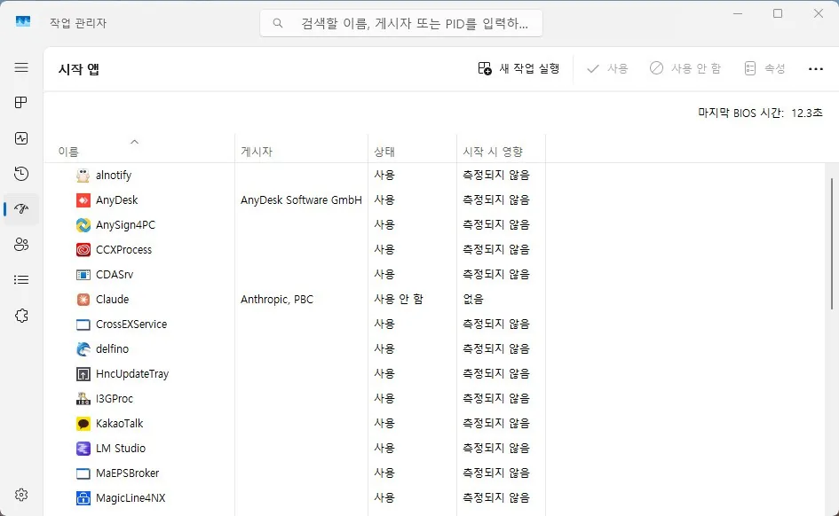

부팅
부팅 속도 저하 원인과 점검 순서
전원은 켜지지만 바탕화면까지 너무 오래 걸리는 경우
부팅 속도 저하는 전원이 켜지는 것과 윈도우가 완전히 준비되는 것을 분리해서 봐야 합니다. 전원은 바로 켜지는데 바탕화면만 늦다면 시작 프로그램, 디스크, 로그인 후 실행 항목이 더 중요합니다.
특정 업데이트나 프로그램을 넣은 뒤부터 느려졌다면, 단순한 체감 저하가 아니라 시작 단계에서 기다리는 항목이 늘어났을 수 있습니다.
이 증상은 부팅 실패와 달리 결국은 들어가지만 오래 걸린다는 점이 핵심입니다.
이 가이드가 필요한 상황
- 전원은 켜지는데 로그인 후 오래 멈춘다.
- 바탕화면이 뜬 뒤에도 한동안 아이콘이 안 보인다.
- 재부팅할 때마다 걸리는 시간이 조금씩 다르다.
먼저 확인할 항목
- 시작 프로그램 정리 — 부팅 직후 동시에 올라오는 항목이 많으면 체감이 크게 느려집니다. 자동 실행 앱과 백그라운드 프로그램을 먼저 줄여 보세요. 작업 관리자(Ctrl+Shift+Esc)의 시작 앱 탭에서 항목별 이름·게시자·시작 시 영향을 확인할 수 있습니다.

- 디스크 지연 확인 — 저장장치가 느리면 로그인 단계부터 전체가 늦어집니다. SMART 상태와 첫 부팅 지연 여부를 함께 봅니다.
- 업데이트 후 변화 확인 — 부팅 스크립트나 드라이버가 바뀌면 로그인 뒤 지연이 생길 수 있습니다. 최근 설치한 업데이트와 드라이버를 떠올려 보세요.
원인을 더 정확히 나누는 방법
로그인 전과 후를 구분하기
전원 버튼을 누른 직후가 느린지, 로그인한 뒤가 느린지에 따라 원인이 달라집니다. 로그인 후만 느리면 프로그램과 서비스 비중이 더 높습니다.
확인 결과에 따른 다음 단계
- 로그인 후만 느릴 때 — 자동 실행 항목과 백그라운드 동기화 프로그램을 먼저 줄여 보세요.
- 전원 켠 직후부터 느릴 때 — 저장장치 인식이나 BIOS 초기화 쪽을 먼저 확인하는 편이 맞습니다.
피해야 할 실수
- 부팅 지연을 그냥 체감 문제로 넘기는 것
- 시작 프로그램을 전혀 보지 않는 것
자주 묻는 질문
- 안전 모드에서는 빠른데 일반 부팅만 느립니다. 이 경우는 시작 프로그램이나 드라이버 충돌 가능성이 더 높습니다.
최종 검토일: 2026-07-14